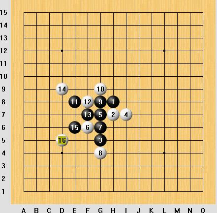
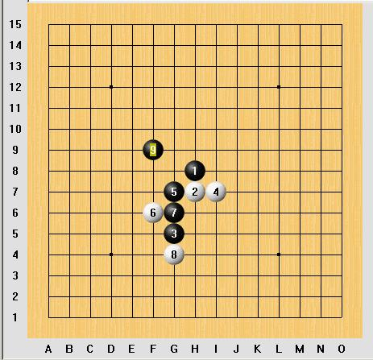
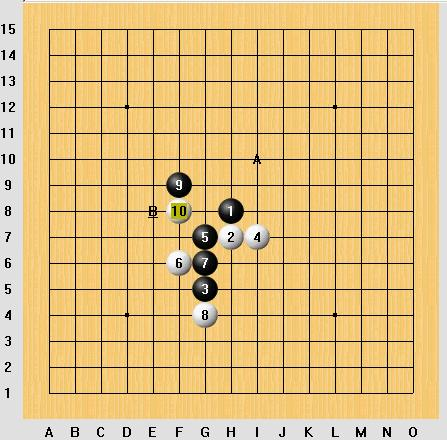
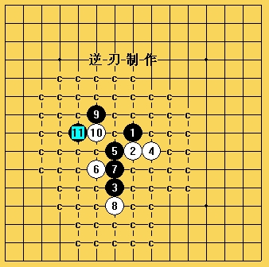

选点妙手! 思维拓展!
#1 选点妙手! 思维拓展! 作者：逆刃 发表时间：2008-8-7 21:35:32
如图,昨天看到的对局,发现这个9手黑连攻是可以被防住的.

对于这个9 我们会不会有另外的思考呢,这里,我们有一个比较好的点可以选择 ,大家对这个9有疑惑,这白挡挡不就挡死了吗... 其实这个9手是很好的

对于10手很多人会想,如果白挡G9怎么办,其实11手走E8,那么白就很麻烦了,
如果10挡G8呢,那11走E9 ,同样黑胜的局面,如果10下F8呢...这里又是一个思考
我们看下图, 这里请思考,为什么我把I10标上A 而E8标上B呢.原因是,
如果11落在A 这个棋右上白无法防守,如果11落在B ,那么对手防D9,.这棋后面还是要右边胜.
虽然2个都能胜,但显的B点没那么有震撼力

选一步好点,是你整盘的关键,就像这个9手,千万不能急噪,要多思考
#2 Re:选点妙手! 思维拓展! 作者：疏星终结 发表时间：2008-8-8 21:25:07
受教
#3 Re:选点妙手! 思维拓展! 作者：gerbo 发表时间：2008-8-10 9:00:47
第三图的A点可以解决，但B点似乎比较难。。。我还没想出来。。汗~ 有谁能给我点提示就好了。。
有谁能给我点提示就好了。。
#4 Re:Re:选点妙手! 思维拓展! 作者：逆刃 发表时间：2008-8-10 11:28:52
应楼上兄弟之约把B点解决掉。

 B点地毯.rar
B点地毯.rar
#5 Re:选点妙手! 思维拓展! 作者：gerbo 发表时间：2008-8-10 12:06:22
 那个B点做了头晕了，老是遇见让人郁闷的唯一，来了逆刃兄弟那个15手真是受益匪浅。
那个B点做了头晕了，老是遇见让人郁闷的唯一，来了逆刃兄弟那个15手真是受益匪浅。
#6 Re:选点妙手! 思维拓展! 作者：兔子哥哥 发表时间：2008-8-11 1:17:07
我也做了一个地毯棋谱！发来大家看下！妖刀11地毯棋谱.rar
#7 Re:选点妙手! 思维拓展! 作者：逆刃 发表时间：2008-8-11 8:27:41
楼上的谱上怎么有另一个我未完成的5的分支啊？#8 Re:选点妙手! 思维拓展! 作者：草莓 发表时间：2008-10-10 19:51:17
学习了,受益匪浅.谢了.#9 Re:选点妙手! 思维拓展! 作者：我爱五子棋伯园 发表时间：2008-10-14 13:59:14
学道受业解惑也#10 Re:选点妙手! 思维拓展! 作者：来客沙丝 发表时间：2009-3-16 20:05:30
有难度，理解困难。
#11 Re:选点妙手! 思维拓展! 作者：启蒙 发表时间：2009-3-19 18:49:48
9手的拓展确实很强，兵不血刃！
好的拓展是那种让人一眼看起来认为很普通，实则大有文章的点
简单的做杀，活三是没有太多技术含量的！